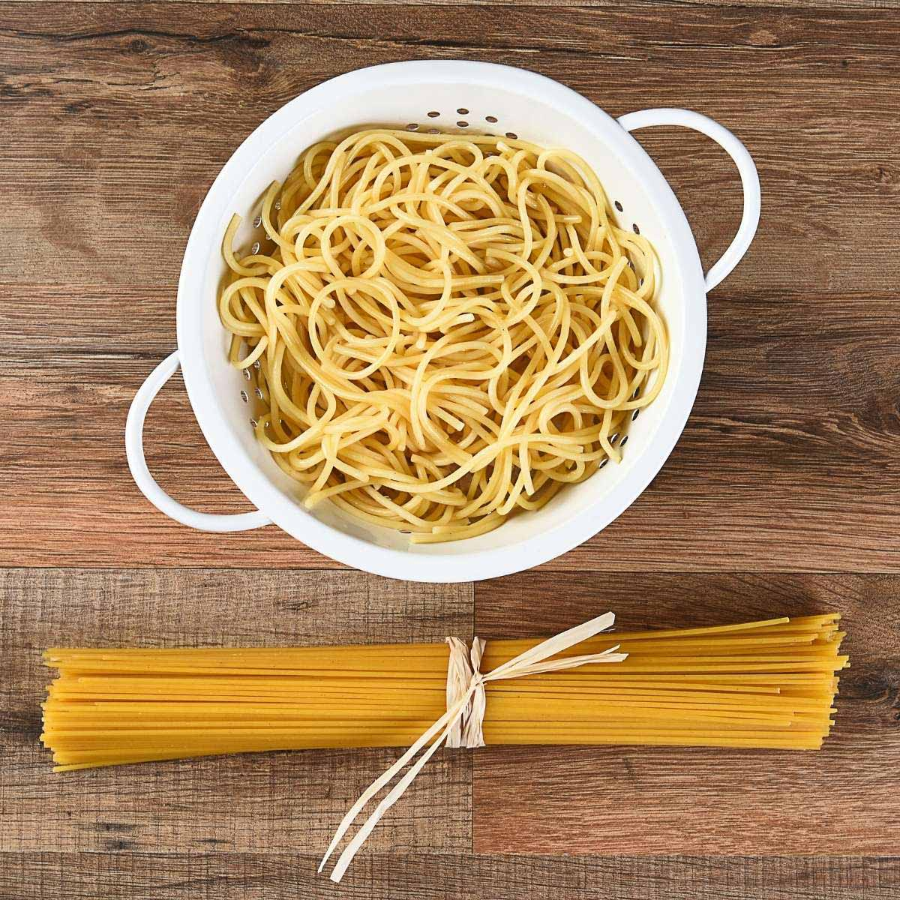

Spaghetti

Spaghetti is the quintessential Italian pasta.
It is long – like a string (hence the name, as spago means string) – round in cross-section and made from durum wheat semolina.
Ingredients:
- 2 lbs. Spaghetti noodles
- 1 lb. ground pork
- 6 ounces luncheon meat minced
- 4 pieces hotdogs or beef franks
- 35 ounces Filipino Style Spaghetti Sauce
- 1/2 cup shredded cheddar cheese
- 1 1/2 cups beef broth
- 1 medium onion minced
- 1 teaspoon minced garlic
- Salt and pepper to taste
- 3 tablespoons cooking oil
Steps
- Cook the Spaghetti noodles according to package instructions. Once cooked, transfer to a bowl. Set aside.
- Serve. Share and enjoy!